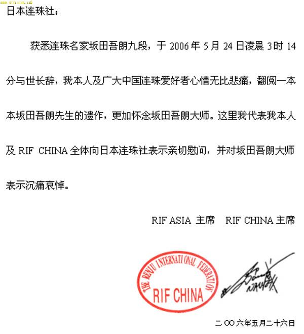
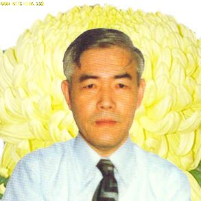

坂田吾郎
#1 坂田吾郎作者：KOFLEO 发表时间：2006-11-25 20:13:04
日本连珠棋界元老。东京中野人氏，1928年5月生。日本大学工学部毕业，1956年初段，1979年晋为8段，曾任日本连珠棋社副理事长。1960——1970年和1982——1989年任日本连珠棋社机关杂志〈连珠世界〉主编，之后，作为日本连珠棋社服务部负责人，担任日本多种报刊连珠专栏主笔，是创办〈社团法人*日本连珠社〉的功臣，一直为连珠棋的普及和发展尽心尽力。
著有〈连珠棋胜法〉〈连珠必胜法〉〈图解五子棋入门〉〈三手胜五子棋题〉（强烈推荐）〈五子棋初步〉英文版〈五子棋〉等
#2 Re:坂田吾郎作者：我是正牌寒星 发表时间：2006-11-29 10:20:13
补充一点：他创造了 SAKATA规则，深受大家的喜爱！
#3 Re:坂田吾郎作者：五子天下 发表时间：2008-3-29 18:23:56
好像已经死了？#4 Re:坂田吾郎作者：爱下不下 发表时间：2009-3-6 13:38:30
SAKATA规则是什么？#5 Re:坂田吾郎作者：星月族 发表时间：2009-12-30 17:48:57
原文由 KOFLEO 发表于 2006-11-25 20:13:04 :

日本连珠棋界元老。东京中野人氏，1928年5月生。日本大学工学部毕业，1956年初段，1979年晋为8段，曾任日本连珠棋社副理事长。1960——1970年和1982——1989年任日本连珠棋社机关杂志〈连珠世界〉主编，之后，作为日本连珠棋社服务部负责人，担任日本多种报刊连珠专栏主笔，是创办〈社团法人*日本连珠社〉的功臣，一直为连珠棋的普及和发展尽心尽力。
著有〈连珠棋胜法〉〈连珠必胜法〉〈图解五子棋入门〉〈三手胜五子棋题〉（强烈推荐）〈五子棋初步〉英文版〈五子棋〉等
#6 Re:坂田吾郎作者：王安石 发表时间：2012-2-3 11:51:01
日本棋手我知道的并不多，有知道的吗，多给我介绍几个，呵呵呵呵